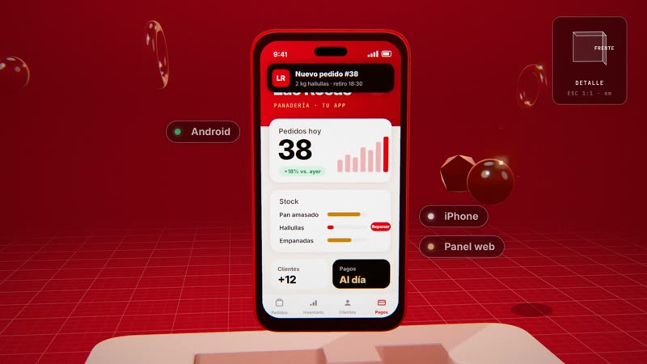

Contesta en segundos, a cualquier hora
Tu cliente escribe a las 23:40 y recibe respuesta al tiro, con la información real de tu negocio.
Atiende por WhatsApp, Telegram o llamada, en tu tono y a cualquier hora, configurado para el servicio de tu rubro: clínicas dentales, notarías, hoteles y más. Tus clientes reciben respuesta en segundos, no al día siguiente.
Cada mensaje sin respuesta es un cliente que le escribe a tu competencia. Tu asistente responde antes de que se vaya.
Tu cliente escribe a las 23:40 y recibe respuesta al tiro, con la información real de tu negocio.
Lo configuramos para el servicio de tu rubro (una clínica dental no pregunta lo mismo que una notaría) con tus precios, horarios y preguntas frecuentes, y con la forma en que tú le hablas a tus clientes.
Agenda horas sin que tengas que intervenir. En salud se puede integrar con tu agenda (Reservo, AgendaPro o Google Calendar); la integración se confirma en cada proyecto.
No reemplaza a tu equipo: responde lo frecuente y, cuando la consulta es delicada, la deriva a una persona con todo lo que el cliente ya contó.
Funciona en
Valores de ejemplo · dato a confirmar con un cliente real
Tu asistente funcionando en tu web, para que lo veas atender de verdad.
Para seguir atendiendo después de la prueba.
WhatsApp, Telegram o llamada. La implementación es más compleja, así que es una oferta aparte.
Precios en pesos chilenos y permanencia [por confirmar].
Descargar ejemplo de resumen del asistente PDFNo. Lo entrenamos con la información de tu negocio y en tu tono, y lo ajustamos con las conversaciones reales.
Lo dice con honestidad y pasa la conversación a tu equipo, con todo lo que el cliente ya contó.
No. Responde lo que más te preguntan y le pasa a una persona lo que necesita a alguien de tu equipo.
Tu asistente funcionando 7 días en tu web, respondiendo tus 5 preguntas más frecuentes. [Condiciones por confirmar].
También se puede, pero la implementación es más compleja, así que la cotizamos aparte. Si usas tu número actual depende del tipo de cuenta: [por confirmar].
En salud se puede integrar con Reservo, AgendaPro o Google Calendar. Lo confirmamos en cada proyecto.
[Plazo a confirmar], según los canales y lo que quieras que haga.
Cuéntanos las 5 preguntas que más te hacen tus clientes y te dejamos el asistente funcionando 7 días en tu web.
Escríbenos por WhatsApp[Número de WhatsApp por confirmar: hoy el botón abre WhatsApp sin destinatario.]


